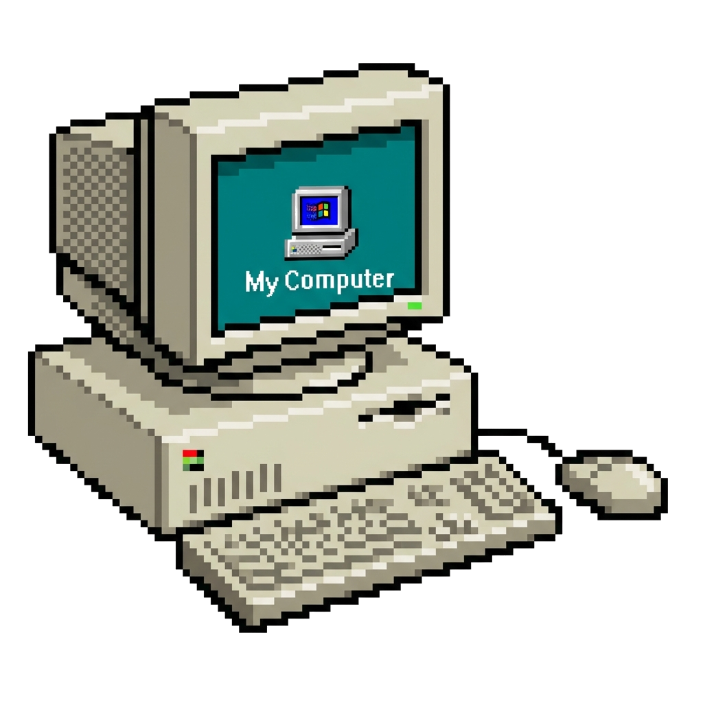
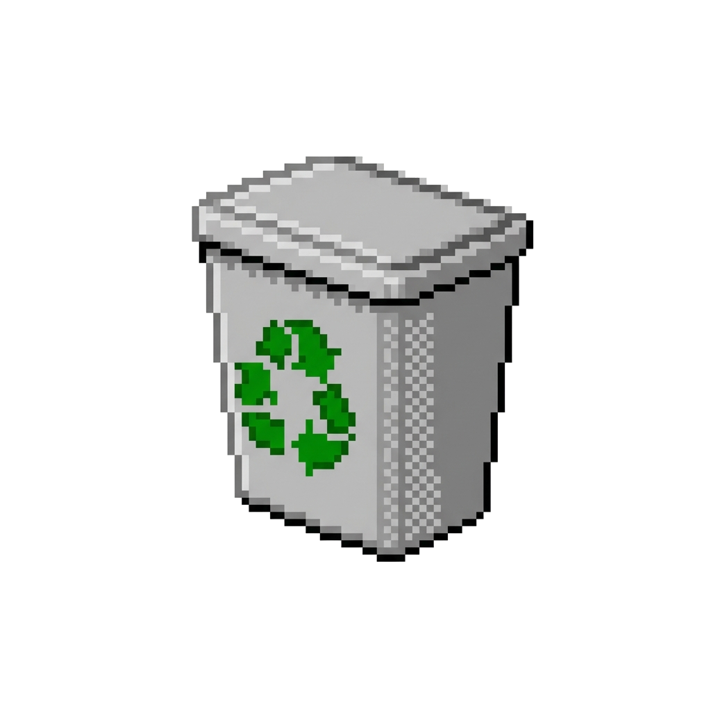
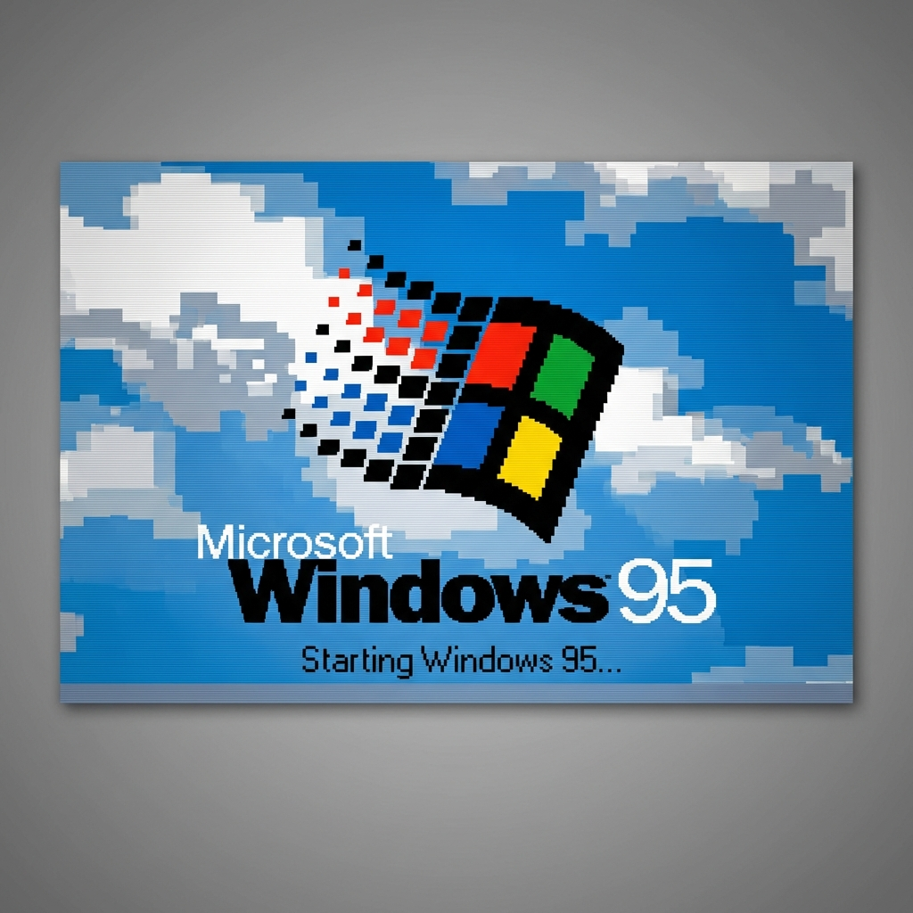
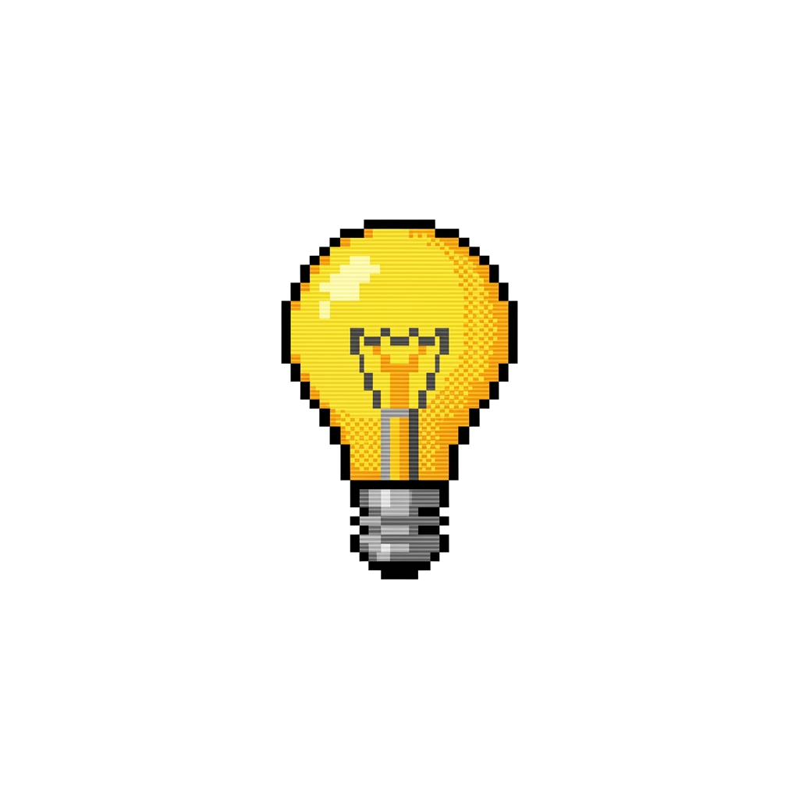
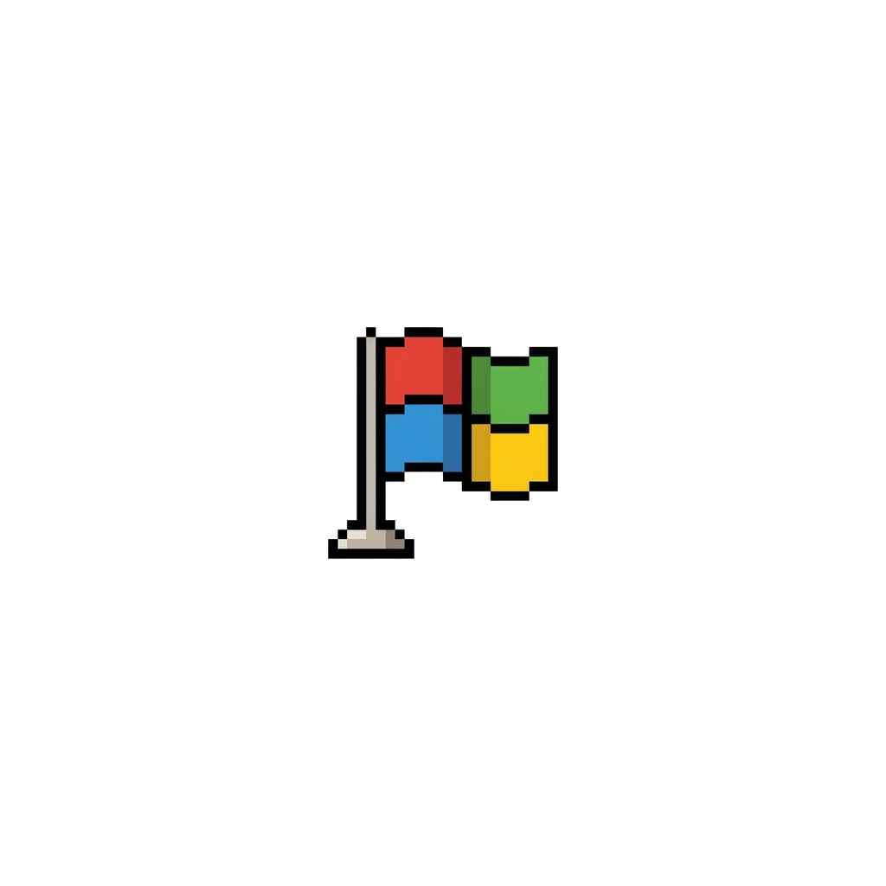

Windows 95
Pierwszy system z Menu Start.
To tutaj wszystko się zaczęło. Plug and Play (czasem Plug and Pray), gierki w 3D (Hover!) i teledysk Weezer na płycie instalacyjnej.

Czy wiedziałeś, że możesz kliknąć prawym przyciskiem myszy na pulpicie?
